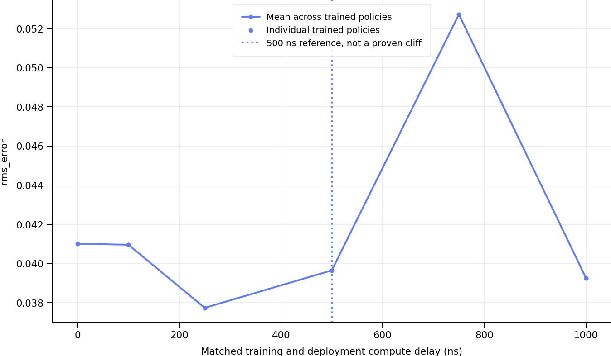
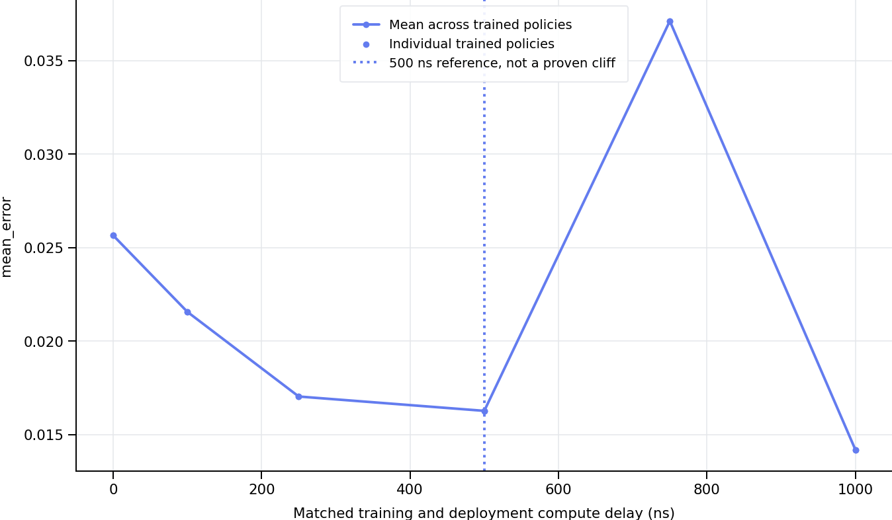
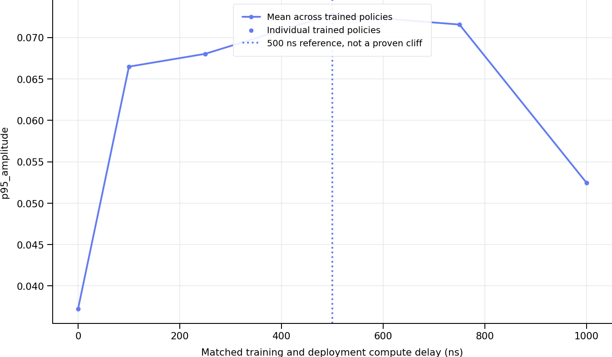
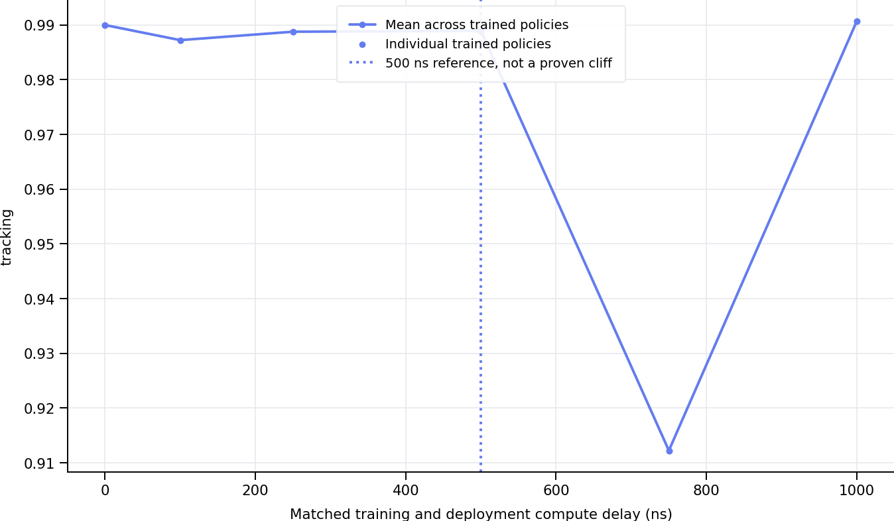
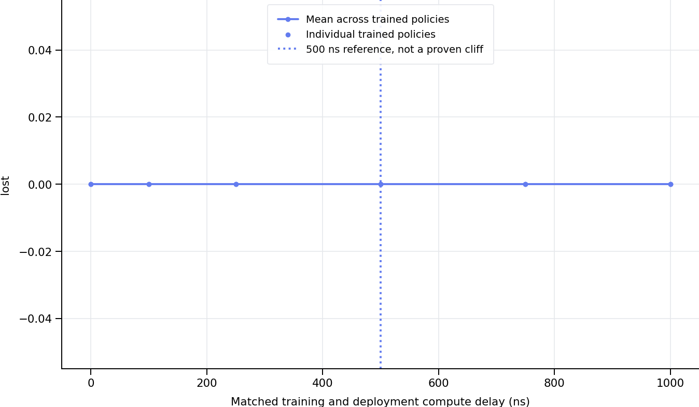
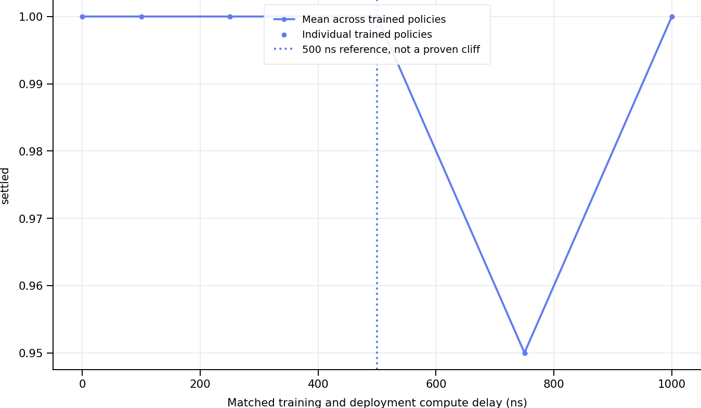
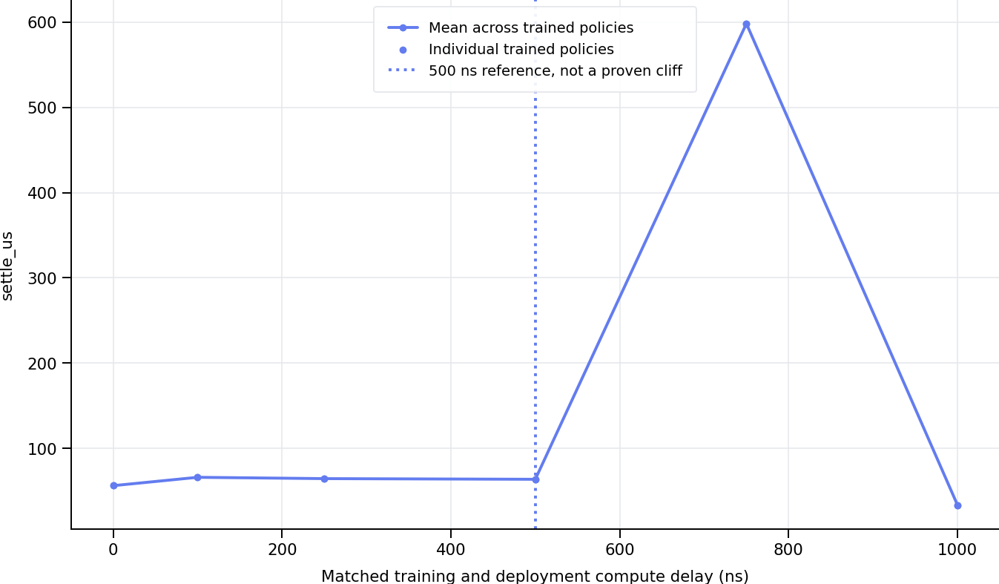

Each model is evaluated only at its training delay. Curves are numerically sorted. Points are means across evaluation episodes; aggregate means weight trained policies equally. Error bars show one standard error between trained policies when at least two exist. A single training seed cannot establish training robustness. Settling time is conditional on success; inspect settled and loss fractions alongside it. 500 ns is a reference, not an imposed failure threshold. Simulation budgets are separate from measured host runtime. Profiles are not machine calibrated.
| latency_ns | training_runs | rms_error | rms_error_n_models | rms_error_se_between_models | mean_error | mean_error_n_models | mean_error_se_between_models | p95_amplitude | p95_amplitude_n_models | p95_amplitude_se_between_models | tracking | tracking_n_models | tracking_se_between_models | lost | lost_n_models | lost_se_between_models | settled | settled_n_models | settled_se_between_models | settle_us | settle_us_n_models | settle_us_se_between_models |
|---|---|---|---|---|---|---|---|---|---|---|---|---|---|---|---|---|---|---|---|---|---|---|
| 0.0 | 1 | 0.041013 | 1 | NaN | 0.025650 | 1 | NaN | 0.037259 | 1 | NaN | 0.989989 | 1 | NaN | 0.0 | 1 | NaN | 1.00 | 1 | NaN | 56.407407 | 1 | NaN |
| 100.0 | 1 | 0.040962 | 1 | NaN | 0.021562 | 1 | NaN | 0.066486 | 1 | NaN | 0.987230 | 1 | NaN | 0.0 | 1 | NaN | 1.00 | 1 | NaN | 66.211111 | 1 | NaN |
| 250.0 | 1 | 0.037741 | 1 | NaN | 0.017038 | 1 | NaN | 0.068032 | 1 | NaN | 0.988766 | 1 | NaN | 0.0 | 1 | NaN | 1.00 | 1 | NaN | 64.662963 | 1 | NaN |
| 500.0 | 1 | 0.039655 | 1 | NaN | 0.016271 | 1 | NaN | 0.072788 | 1 | NaN | 0.988930 | 1 | NaN | 0.0 | 1 | NaN | 1.00 | 1 | NaN | 63.885185 | 1 | NaN |
| 750.0 | 1 | 0.052721 | 1 | NaN | 0.037117 | 1 | NaN | 0.071568 | 1 | NaN | 0.912250 | 1 | NaN | 0.0 | 1 | NaN | 0.95 | 1 | NaN | 598.093567 | 1 | NaN |
| 1000.0 | 1 | 0.039264 | 1 | NaN | 0.014196 | 1 | NaN | 0.052452 | 1 | NaN | 0.990710 | 1 | NaN | 0.0 | 1 | NaN | 1.00 | 1 | NaN | 33.744444 | 1 | NaN |







| environment | dynamics_profile | model | trained_ns | deployed_ns | total_action_ns | inference_jitter_ns | latency_source | backend | episodes | rms_error | rms_error_n | rms_error_std | rms_error_se | mean_error | mean_error_n | mean_error_std | mean_error_se | p95_amplitude | p95_amplitude_n | p95_amplitude_std | p95_amplitude_se | settle_us | settle_us_n | settle_us_std | settle_us_se | lost | lost_n | lost_std | lost_se | settled | settled_n | settled_std | settled_se | tracking | tracking_n | tracking_std | tracking_se | damping_per_us | damping_per_us_n | damping_per_us_std | damping_per_us_se |
|---|---|---|---|---|---|---|---|---|---|---|---|---|---|---|---|---|---|---|---|---|---|---|---|---|---|---|---|---|---|---|---|---|---|---|---|---|---|---|---|---|---|
| accelerator | mild | experiments/models_mild/accelerator_mild_lat_0ns_paper16_s0 | 0.0 | 0.0 | 0.0 | 5.0 | budget | numpy | 100 | 0.041013 | 100 | 0.001188 | 0.000119 | 0.025650 | 100 | 0.000466 | 0.000047 | 0.037259 | 100 | 0.000350 | 0.000035 | 56.407407 | 100 | 138.905877 | 13.890588 | 0.0 | 100 | 0.0 | 0.0 | 1.00 | 100 | 0.000000 | 0.000000 | 0.989989 | 100 | 0.000865 | 0.000086 | 0.000104 | 100 | 0.000087 | 0.000009 |
| accelerator | mild | experiments/models_mild/accelerator_mild_lat_100ns_paper16_s0 | 100.0 | 100.0 | 100.0 | 5.0 | budget | numpy | 100 | 0.040962 | 100 | 0.001350 | 0.000135 | 0.021562 | 100 | 0.000433 | 0.000043 | 0.066486 | 100 | 0.002039 | 0.000204 | 66.211111 | 100 | 148.462562 | 14.846256 | 0.0 | 100 | 0.0 | 0.0 | 1.00 | 100 | 0.000000 | 0.000000 | 0.987230 | 100 | 0.001675 | 0.000168 | 0.000171 | 100 | 0.000013 | 0.000001 |
| accelerator | mild | experiments/models_mild/accelerator_mild_lat_250ns_paper16_s0 | 250.0 | 250.0 | 250.0 | 5.0 | budget | numpy | 100 | 0.037741 | 100 | 0.000526 | 0.000053 | 0.017038 | 100 | 0.000304 | 0.000030 | 0.068032 | 100 | 0.001611 | 0.000161 | 64.662963 | 100 | 149.087399 | 14.908740 | 0.0 | 100 | 0.0 | 0.0 | 1.00 | 100 | 0.000000 | 0.000000 | 0.988766 | 100 | 0.001535 | 0.000153 | 0.000141 | 100 | 0.000020 | 0.000002 |
| accelerator | mild | experiments/models_mild/accelerator_mild_lat_500ns_paper16_s0 | 500.0 | 500.0 | 500.0 | 5.0 | budget | numpy | 100 | 0.039655 | 100 | 0.001080 | 0.000108 | 0.016271 | 100 | 0.000364 | 0.000036 | 0.072788 | 100 | 0.001628 | 0.000163 | 63.885185 | 100 | 149.558777 | 14.955878 | 0.0 | 100 | 0.0 | 0.0 | 1.00 | 100 | 0.000000 | 0.000000 | 0.988930 | 100 | 0.001225 | 0.000123 | 0.000154 | 100 | 0.000018 | 0.000002 |
| accelerator | mild | experiments/models_mild/accelerator_mild_lat_750ns_paper16_s0 | 750.0 | 750.0 | 750.0 | 5.0 | budget | numpy | 100 | 0.052721 | 100 | 0.002448 | 0.000245 | 0.037117 | 100 | 0.000738 | 0.000074 | 0.071568 | 100 | 0.010452 | 0.001045 | 598.093567 | 95 | 189.582465 | 19.450751 | 0.0 | 100 | 0.0 | 0.0 | 0.95 | 100 | 0.219043 | 0.021904 | 0.912250 | 100 | 0.081875 | 0.008187 | 0.000152 | 100 | 0.000029 | 0.000003 |
| accelerator | mild | experiments/models_mild/accelerator_mild_lat_1000ns_paper16_s0 | 1000.0 | 1000.0 | 1000.0 | 5.0 | budget | numpy | 100 | 0.039264 | 100 | 0.000688 | 0.000069 | 0.014196 | 100 | 0.000102 | 0.000010 | 0.052452 | 100 | 0.000547 | 0.000055 | 33.744444 | 100 | 101.321893 | 10.132189 | 0.0 | 100 | 0.0 | 0.0 | 1.00 | 100 | 0.000000 | 0.000000 | 0.990710 | 100 | 0.000642 | 0.000064 | 0.000211 | 100 | 0.000042 | 0.000004 |